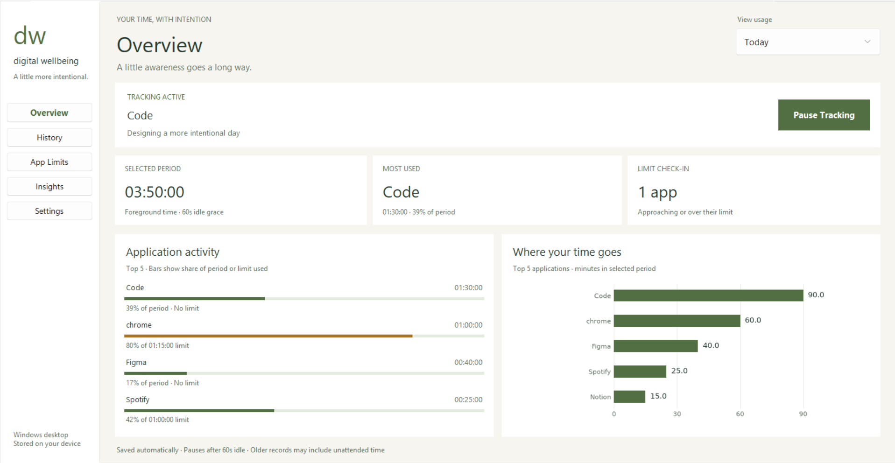

See where the hours go.
Track the foreground application and explore your usage in a simple dashboard, with time broken down by app.
BUILT FOR WINDOWS · STORED LOCALLY
Your time deserves a little attention. See where it goes, set limits that work for you, and make room for life beyond the screen.
A Python desktop app. No account or API key needed.
SMALL TOOLS. MEANINGFUL HABITS.
You don’t need another productivity score. You need a clearer picture of how you spend your time.
Track the foreground application and explore your usage in a simple dashboard, with time broken down by app.
Choose application limits and warning thresholds. Voice reminders and desktop notifications help you notice when it’s time to pause.
Explore statistical usage summaries after recording at least three days. Use them as a starting point for reflection.
A CLOSER LOOK
A desktop dashboard for checking in.
Light and dark themes included.

MAKE IT YOURS
Start small. The goal is to make your time feel more like your own.
Launch the Windows app and press Start Tracking to observe foreground application time.
Add limits for the apps you want to be more intentional about. Choose your alert preferences in Settings.
Review your usage, notice your patterns, and adjust your limits to fit your day.
READY WHEN YOU ARE
Run the project from source on Windows with Python and Tcl/Tk installed.
Read the setup guidegit clone https://github.com/DivyanshM30/digital-wellbeing-tracker.git
cd digital-wellbeing-tracker
py -m venv .venv
.\.venv\Scripts\python.exe -m pip install -r requirements.txt
.\.venv\Scripts\python.exe main.pySource installation only. A verified Windows installer is not provided on this page.
The app stores process names, window titles, and usage durations locally in plain-text files. Window titles can contain document or page names. The current version has no automatic retention controls.
This is a project in development. Idle time is currently included, daily rollover needs improvement, and repeated analysis can duplicate history. Treat the summaries as exploratory. See the improvement review for details.
“Auto Shutdown Apps at Limit” defaults to enabled on a fresh setup and can close an application with unsaved work. Turn it off in Settings before tracking if you want reminders without termination.
The current main.py implementation uses Windows APIs. macOS and Linux are not currently supported.